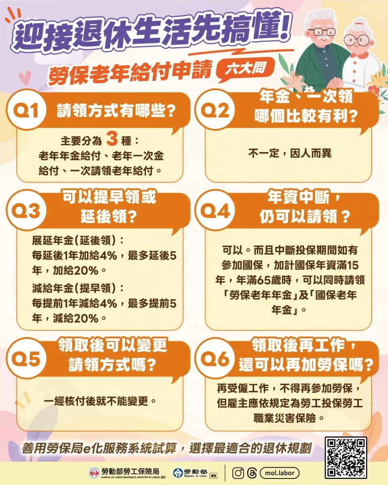

快要退休、或已經到了可以領的年齡，勞保老年給付怎麼領？勞保局整理了六個常見問題，我們把重點列在下面。

一、老年給付有哪幾種領法？
- 老年年金給付：每個月領。勞保年資滿 15 年，且達法定請領年齡的人適用。115 年起，法定請領年齡已調高到 65 歲。
- 老年一次金給付：一次領。年資未滿 15 年，且達法定請領年齡的人適用。
- 一次請領老年給付：一次領。適用在 98 年 1 月 1 日以前就有年資，且離職退保時的年齡與年資已符合請領條件的人。
二、年金和一次領，哪個比較有利？
沒有標準答案，因人而異。要看自己的資金需求、財務狀況、家庭狀況和健康狀況來決定。
三、可以提早領或延後領嗎？
可以。年資滿 15 年的人，可以在法定請領年齡前後，選擇提早或延後領取年金，每提早或延後 1 年，金額就減少或增加 4%，最多提早或延後 5 年，也就是最多減少或增加 20%。
- 延後領（展延老年年金）：每延後 1 年多加 4%，最多延後 5 年，最高多加 20%。
- 提早領（減給老年年金）：每提早 1 年少給 4%，最多提早 5 年，最高少給 20%。
四、勞保年資中斷很多年，還能領嗎？
可以。只要曾經參加過勞工保險，不管中斷多久，到了法定請領年齡（115 年起是 65 歲）就可以請領。另外，如果勞保年資不滿 15 年，但中斷期間曾參加國民年金，加上國保年資後滿 15 年，年滿 65 歲時可以同時請領勞保老年年金和國保老年年金。
五、領了以後，還能改領法嗎？
不行。勞保局核付之後，依規定不能再變更請領方式。所以申請前要想清楚，也可以先用勞保局的試算系統，比較「按月領」和「一次領」的差別，再做決定。
六、領了以後再工作，還能再加勞保嗎？
不行。已經領過勞保老年給付的人，再受僱工作就不能再參加勞保。不過雇主還是要依規定替你投保職業災害保險，不管有沒有超過 65 歲，這是保障中高齡勞工的權益。
自己的年資和狀況要怎麼算，歡迎直接問我們。
資料來源：勞動部勞工保險局。原公告網址：https://www.bli.gov.tw/0110301.html